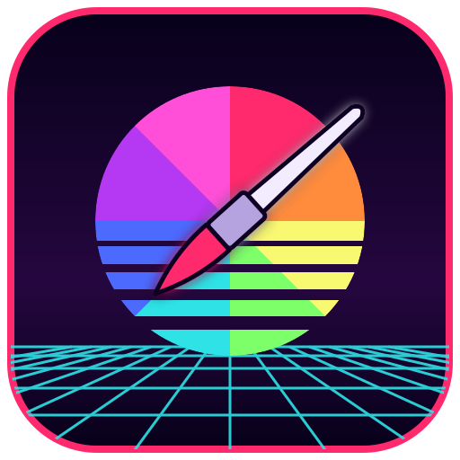

A free colour wheel and paint toolkit for miniature painters. See 5,467 paints from 18 brands, from Army Painter and Citadel to Golden artist acrylics, laid out by hue and lightness, match them across brands, plan ramps and colour schemes, and share how you painted it.
Open the colour wheel Browse palettes Guides What's newEvery paint placed by its hue around the wheel and its lightness from centre to rim. Tick whole ranges or single paints, from any mix of brands.
Tap any paint to see the best match from each of the other ranges, so you can swap a paint you don't own for one you do.
Turn one paint into a step-by-step ramp from shadow to highlight, or build your own blend between any paints.
32 themed colour schemes, from Rust Belt Salvage to Spring Blossom, matched to the brand you pick or to your own paints.
Conversion charts between the brands, plus plain-English guides to the techniques the wheel helps with.
Keep a list of the paints on your shelf and bring them up on the wheel in one tap.
Recipes are one colour, layer by layer from base to highlight. Tutorials are a whole model, step by step with photos and video.
Find painters by name, follow the ones you like, and see who takes commissions, with photos of their work and prices.
Chat rooms for talking paint in real time, in a popup you can keep open while you use the wheel.
Sign in with Google, Discord, GitHub or an email and password to keep everything across devices.
The main changes to The Painters Desk, newest first. Found a bug or have an idea? Use the Feedback button on any page.
Tap any paint on the wheel to see its complement, neighbours and matches from every brand. How to read the wheel
Tap a paint to inspect it.
Use Change paints to show any mix of paints from any brand. Basing textures appear in this list only, when selected.